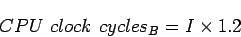
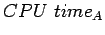
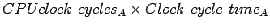
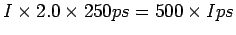
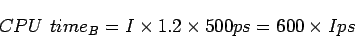
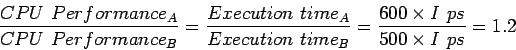
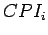
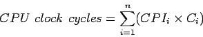
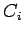

สมมุติว่าเรามีคอมพิวเตอร์ที่ออกแบบต่างกันสองชุด แต่ทำงานบนชุดคำสั่งเดียวกัน คอมพิวเตอร์ A มี Clock cycle time เท่ากับ 250 ps และ CPI เท่ากับ 2.0 ในการทำงานของโปรแกรมหนึ่ง และคอมพิวเตอร์ B มี Clock cycle time เท่ากับ 500 ps และ CPI เท่ากับ 1.2 ในการทำงานของโปรแกรมเดียวกัน จงหาว่าคอมพิวเตอร์เครื่องไหนเร็วกว่า และ เร็วกว่าเท่าไร
จากที่คอมพิวเตอร์ทั้งสองทำงานบนชุดคำสั่งเดียวกัน ถึงแม้จะมีการออกแบบต่างกัน แต่จะประมวลผลคำสั่งเป็นจำนวนเท่ากันสำหรับโปรแกรมเดียวกัน ให้จำนวนคำสั่งนั้นเรียกว่าค่า จำนวน Clock cycles ของการประมวลผลของแต่ละเครื่องจะเท่ากับ
|  |
เราสามารถคำนวณ CPU time สำหรับแต่ละเครื่อง ได้เท่ากับ
|  |  | (4.14) | |
|  |
และสำหรับคอมพิวเตอร์ B
|  |
จะเห็นได้ว่าคอมพิวเตอร์ A เร็วกว่า โดยคอมพิวเตอร์ A เร็วกว่าคอมพิวเตอร์ B เท่ากับ
|  |
สามารถสรุปได้ว่าคอมพิวเตอร์ A เร็วกว่าคอมพิวเตอร์ B 1.2 เท่า
เราสามารถเขียนสมการประสิทธิภาพพื้นฐานในรูปของความสัมพันธ์ระหว่าง จำนวนคำสั่ง (Instruction Count), CPI และ Clock cycle time:
| (4.15) |
หรือ
| (4.16) |
สมการขั้นต้นมีประโยชน์มากในการพิจารณาประสิทธิภาพ เนื่องจากเป็นสมการที่รวบรวมเฟคเตอร์ที่สำคัญสามตัวที่ส่งผลต่อประสิทธิภาพ เราสามารถเปรียบเทียบการออกแบบคอมพิวเตอร์ต่างๆ ตามเฟคเตอร์ทั้งสามตัวนี้ เราสามารถนับจำนวนคำสั่งในโปรแกรมได้ และอัตราสัญญาณนาฬิกาสามารถดูได้จากเอกสารรายละเอียดของโปรเซสเซอร์ ส่วนของ CPI จะค่อนข้างยากในการหา ในการทดสอบโปรแกรม และวัดเวลาในการประมวลผล เราสามารถใช้สมการขั้นต้นในการคำนวณค่าต่างๆ ทั้งสามได้
การวัดประสิทธิภาพพื้นฐานของคอมพิวเตอร์ สามารถแสดงได้จากสมการข้างล่าง
ในบางครั้งเราสามารถกำหนด CPI สำหรับคำสั่งที่แตกต่างกันได้ โดยกำหนด  สำหรับคำสั่ง  หรือชุดที่
หรือชุดที่  โดยสามารถคำนวณได้ใกล้เคียงกับประสิทธิภาพจริงได้มากขึ้น
โดยสามารถคำนวณได้ใกล้เคียงกับประสิทธิภาพจริงได้มากขึ้น
|  | (4.17) |
โดยที่  เป็นจำนวนคำสั่งประเภท  ในโปรแกรมที่ทำการประมวลผล
ในโปรแกรมที่ทำการประมวลผล
การปรับปรุงคอมพิวเตอร์ในส่วนต่างๆ มีผลกระทบดังต่อไปนี้